Linux is a family of open-source, Unix-like operating systems based on the Linux kernel.
Linux itself is just the kernel.
The origin of Linux as an open-source project is directly tied to the decision of its creator (Linus Torvalds) to adopt a specific software license.
Linus Torvalds, a Finnish computer science student, began developing the Linux kernel in 1991 as a personal hobby project. He aimed to create a free operating system kernel for his personal computer.
see sceen shot.....
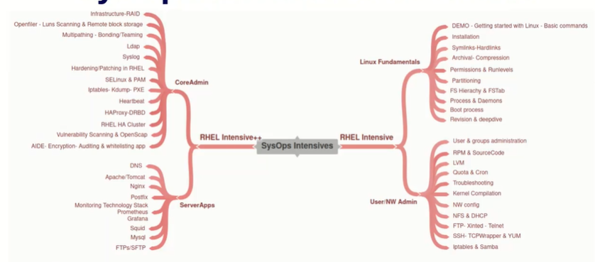
df
ye command OS ki partations deekhny k use hoti hee
df -h sy hum partation ki deatils readable form me deekh skte hee
see screen shoot....
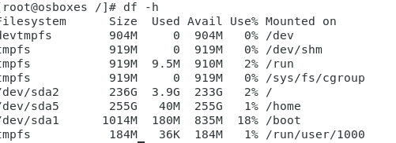
date command see hum copmuter ki date settings beekh skte hee or change bhi k,r skte hee.
pwd "print working directory"
is command see hum maloom kr sktee hee k hum kis file/directory mee heen.
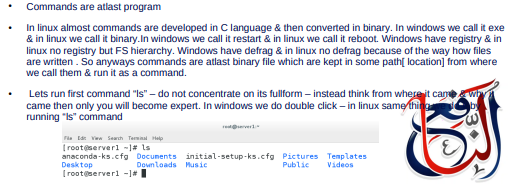
Commands and Flags basic concept hain jb aap linux me command line interface k saath kam kr rhe hote hain.
command ek hukum hoti hai, jo computer ko kisi khaas kaam ko anjam dene ke liye di jati hai.
Flags (also called options) jo kisi command k behavior ko change krny k lye use hoty hain.
Flags usually start with hyphen - .
Examples
-l: long listing format
-a: show all files (including hidden ones)
Har OS mee 2 types k paths hooty hain
Yeh aisa address hai jo hamesha computer ki jadd (root) yaani \ se shuru hota hai.
Jaise kisi shehar ka pooray ka pooray address mein house number, street, colony, sab kuch likhna.
Hamesha / (forward slash) se shuru hota hai.
Examples
/home/ahmad/Documents/meri_file.txt
/usr/bin/ls
Yeh aisa address hai jo aap ki haal ki jagah (Current Directory) se shuru hota hai.
Jaise aap kisi ko kehna "Yahan se seedha chalo, phir left mur jana."
Kabhi bhi / se nahi shuru hota.
. (Dot) = Abhi jahan khade hain (Current Directory)
.. (Double Dot) = Upar wala folder (Parent Directory)
For Example aap /home/ahmad mein hain):
Files aur folders ko ek tarteeb (structure) ke sath arrange karna jese ek tree ke branches hoti hain File System Hierarchy hai.
Har cheez ki bunyaad / directory sy hoti he jis trha tree ki bnyaad root he isy trha linux main bhiroot / directory sb files/directories ki bnyaad he .
Is ko Father off al files bhi ke sktee hain.
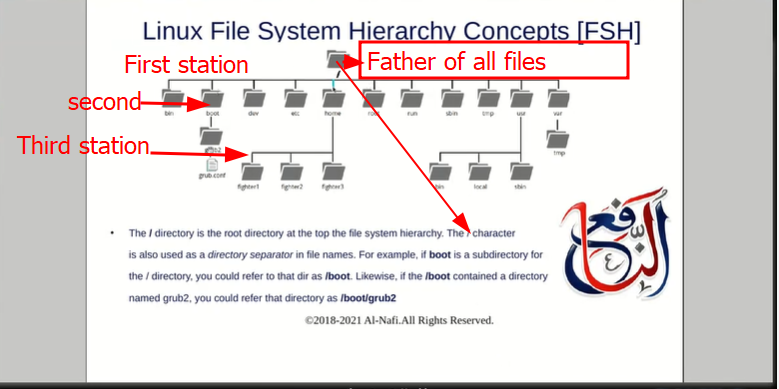
Har file ka pata hota hai kahan hai, is wajah se access lena asaan ho jata hai.
Admins ko system samajhne mein asani hoti hai, kyunke file system munazzam hota hai.
Har folder ka apna role aur access level hota hai, jo security ko behtar banata hai.
Files ko manage, update, ya delete karna asan hota hai, kyunke sab kuch apni jagah par hota hai.
Inshort File System Hierarchy aik computer ki tarteeb hai jo files aur folders ko aik mustaqil tareeqay se arrange karti hai, jis se system chalana, maintain karna, aur secure rakhna aasan ho jata hai.
See Screenshoot
Agar ap ne apne computer par Linux install nahi kiya, to ap yeh alternative istemal kar sakte hain.
Ap Linux ke commands baghair koi machine install kiye online terminals ke zariye practice kar sakte hain. Google par "Linux online terminals" search karen.
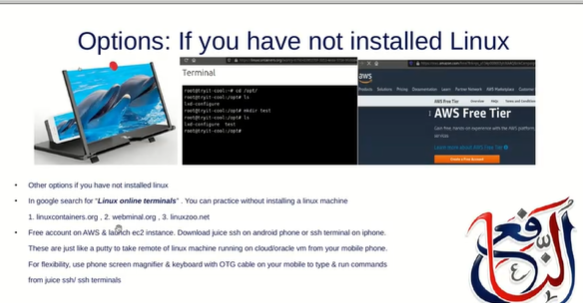
google par wbsite mojood hain jin see hum directly Linux ka terminal use kr skte hain.
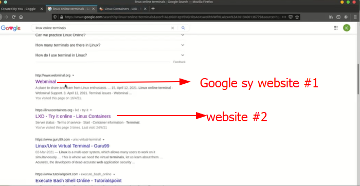
Commands Commands atlast a programs Linux mein lagbhag sab commands C language mein develop kiye jate hain aur phir binary mein convert kiye jate hain.
Flags
Flags (options ) commands ke sath use kiye jate hain unke behavior ko change krty hain. Ye hyphen (-) ya double hyphen (--) se shuru hote hain.
agar kisy commands k flags maloom krny hoon to --help command use hoti hai.
See Screenshot
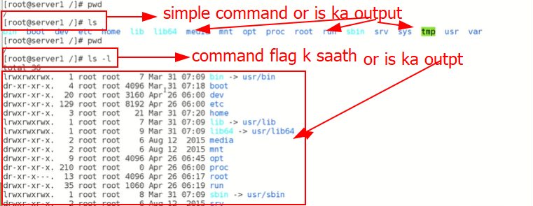
agar command k saath flags lagay jaen to commands ki power yani kaam krny ki taqat or treeqa kar change karty hain .
Screenshots sy wazaht ..
Is SS. main simple command k saath 1 directory k andar 1 or dircetory bnan rha hai lakin output main keh rha hai directory ni bn skti.
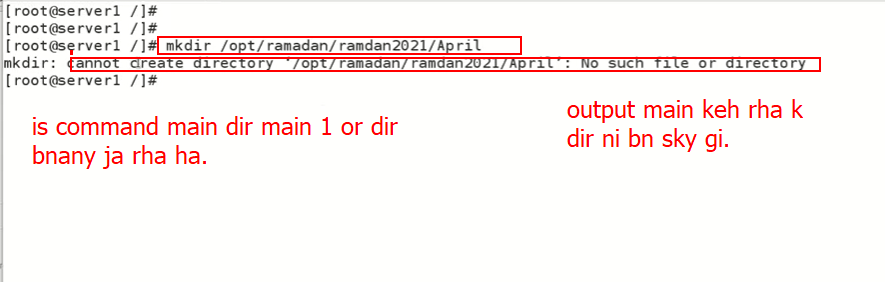
is SS. main command k saath -p flag use krty haoy same command run krta hain directoey bn jaaty is maloom hota hai k flags k role Linux main bohat eham or strong hai.
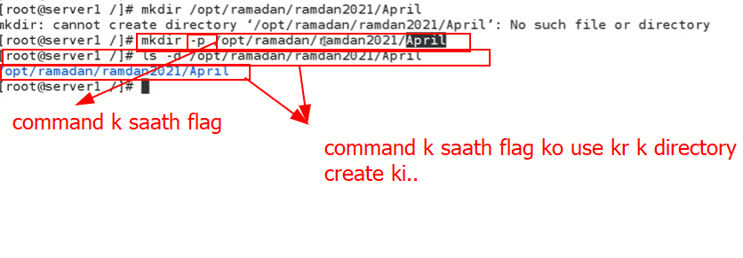
-p ka matalb hai k jis directory main directory create kr rhee hain us ko parent maan kr directory bnao . is koi error eist ni ho gaa.
hum neechy dye gae screenshot me mojjod commands ko follow kr k user switch kr skty hain .
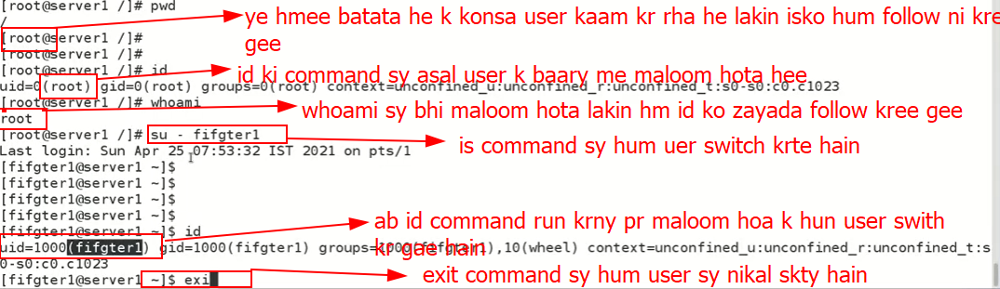
is sy maloom hoa k Linux multiuser mutitasks hai.
Linux main veesy to beshumar directories hoti hain jin main har makhsso kaam ko krny k lye commands hoti hai lakin yhan kuch directoreis ka overview jany gy jo basic hain .
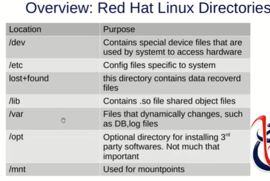
| directories | opreations |
|---|---|
| /dev | Hardware ke parts (jaise printer, hard disk) ko chalane wali special files yahan hoti hain. |
| /etc | Computer ke system ki settings aur programmes ki configuration files yahan hoti hain. |
| /lost+found | System kharab hone par bach gayi files is jagah milti hain. |
| /lib | Programmes ko chalane ke liye zaroori basic files yahan hoti hain. |
| /var | Woh files jo waqt ke saath badalti rehti hain, jaise logs, emails, ya database. |
| /opt | Zyada connections waly software (jaise games) yahan install hotey hain. |
| /mnt | CD, USB, ya koi doosri drive computer mein lagane ki temporary jagah. |
| /bin | Saada (basic) commands jo har user istemal kar sakta hai, unke programmes yahan hain. |
| /sbin | Superuser (Admin) ke khaas system commands aur unke programmes yahan hain. |
| /boot | Computer ko ON karte waqt chalne wali sab se ahem startup files yahan hoti hain. |
yhan par lib main .SO files ka zikar hoa jo k bilkul nai hain maery lye is ki kuch wazaht ...
Ye aik compiled binary file hoti hai jo multiple programs ke liye shared code provide karti hai.
Linux files ko edit krny k kaafi editors available hain jo different treeqa sy work krty hain hum kch aditors k baary main padheen gy..
vi filename ki command run krain . jis file main kaam krna us file ka name dena hoo ga.dd press kain line delete ho jaye gi.yy type krain file copy ho jaye gi.p type kree content save ho jaye gaa.Esc key press kr k or phi aap :wq write kr k enter kr dain aap file save kr k baahir aa jayee gee.:w wirte kr k enter kr dain file save ho jaye gi lekin aap file k anar hi hain.:eq! write kr k enter krain.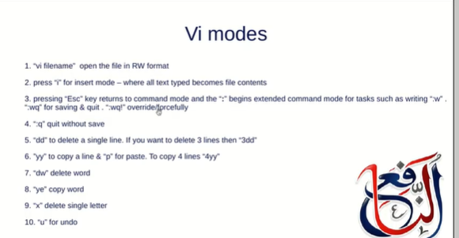
softlink kisi file ka shortcut hota hai.isy symbolic link bhi kehty hain.
Softlink Create krny ka treeqa..
myfile hai is ka Softlink bnany k lye command ln -s myfile yasir
ko run kro ga ab mery pass yasir as a softlink ho ga.
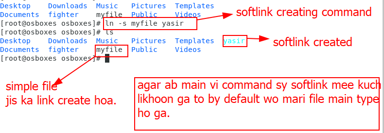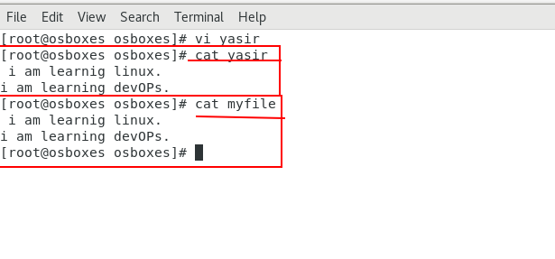
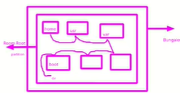
ye daigram partitions ko zahir krti hai.
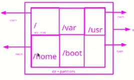
Iska main maksad yeh hai k Linux system main stability aur security k liye directories ko alag partitions main divide karte hain, taake ek issue doosre ko affect na kare.
Yahan pe directories jaise /usr, /home, /var, /boot ko alag-alag partitions banaya gaya hai.
Partitions ka maksad hota hai data ko alag rakhna (isolation). Agar ek partition corrupt ho jaye to baaki safe rehte hain.
Partations ko view krny k lye df -f command use hotia hai.

Agar directory df -h main show ho rahi hai → wo partition + directory hai.
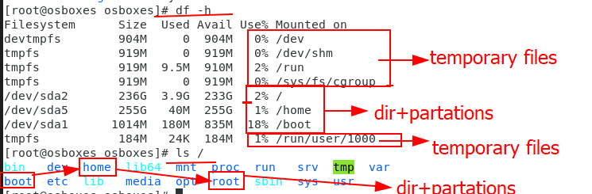
Kernel yeh sab virtual filesystems banata hai because:
Hardware ko files ki tarah represent karna (/dev).
Runtime system info aur process info dena (/proc, /sys).
Fast, temporary storage provide karna (/run, tmpfs).
User-space aur kernel-space ke beech ek bridge create karny k lye. ta k OS kaam kr skeen.
🔹 Soft Links (Symbolic Links)
Yeh Windows ke shortcuts ki tarah hotay hain.
| Advantages | Disadvantages |
|---|---|
| Easy to access- Tum kisi file/folder ka shortcut bana sakte ho aur use easily access kar sakte ho. | If parent is deleted-child (link) becomes useless (broken link). |
| Can cross partitions- Soft link ek partition se doosre partition main bhi point kar sakta hai. | |
Can be created on directories-Tum directory ke liye bhi soft link bana sakte ho. Example: ln -s /var/log logs_link |
🔹 Hard Links
Yeh ek tarah ka duplicate reference hota hai original file ka. Matlab dono ek hi inode (file system entry) ko point karte hain.
| Advantages | Disadvantages |
|---|---|
| Type of backup- Agar ek link delete ho jaye, file ka data doosre hard link ke zariye still accessible hota hai. | Cannot cross partitions Hard link ek partition ke andar hi ban sakta hai. Agar file /home main hai to uska hard link /usr main nahi ban sakta. |
| If parent is deleted, no impact on child - Matlab agar original naam wali file delete kar di, tab bhi data hard link se access ho sakta hai . | Directories ke liye hard link banane ki ijazat nahi (to avoid loops aur complexity). |
🔹Simple
Soft link: shortcut ( original file pe depand krta hai)
Hard link: copy reference (agar original file delet ho bhi jaye to link kan krt hai)
Har file ka ek unique inode number hota hai.
Inode ek file ke attributes/properties ko store karta hai.
Inode dekhne ka command hai: ls -i filename
ls -il command ka use kar ke tum file ka long list aur inode details dekh sakte ho.
Inode number pehle se nahi hota, bilkul class roll number ki tarah. Jab file create hoti hai tab usay inode number assign hota hai.
Hardlink files ka inode number same hota hai.
Softlink files ka inode number alag hota hai.
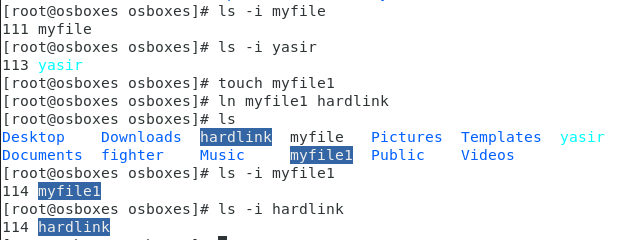
Hum indoe number sy -inum command ko use krty hoaye maloom kr skte hain hain k konsi file apas main linked hain
cat /etc/redhat-releaseLinux distribution aur uska version check karta hai.
uname -r Kernel ka version dikhata hai.
arch``` Machine ki architecture (32-bit / 64-bit) show karta hai.
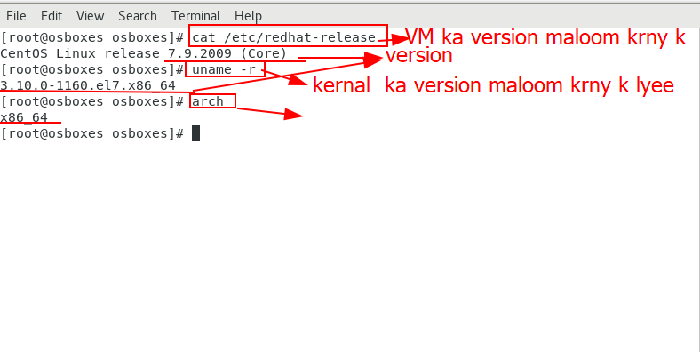
Linux main jab hum ls -l command chalatay hain, to file/folder ke details aati hain jo 9 alag-alag fields hoti hain. Yeh slide unhi ko explain kar rahi hai.
-rw-r--r-- 1 root root 0 May 10 08:03 myfile.txt
Pehla character batata hai ke yeh file hai, directory hai ya link.
(-)normal file
(d) directory
(l) link
Next 9 characters: rw-r--r--
Ye batate hain ke owner, group, others ke paas read (r), write (w), execute (x) permissions hain ya nahi.
Yeh batata hai ke file ke kitne hard links hain.
Yeh batata hai file ka owner kaun hai.
File ka group jo access control ke liye use hota hai.
File ka size (bytes main).
Access / Modification time
Actual file/folder ka naam.
r = read (padh sakta hai)
w = write (edit/delete kar sakta hai)
x = execute (run kar sakta hai, agar script/program ho)
-= no permission
rw- Owner ke paas read + write permission hai
r-- Group ke paas sirf read permission hai
r-- Others ke paas bhi sirf read permission hai
9 characters: rw-r--r--
pehly 3 owner k lyee hoty hain.
2nd 3 gruop klye hooty hain.
last 3 other k lye hoty hain.
Owner file ko read + write kar sakta hai
Group aur Others file ko sirf read kar sakte hain, edit ya delete nahi kar sakte
gar kisi file ki permission rw-r--r--
rw-his ka matlab hai k is file k owner(user) ko read&wirte ki permission hai (yani user is file ko pad skta hai or file main likh bhi skta hai).
r--agy is file ka group yani(ye file jin users k group ko avail hai)wo bs file ko pad skty hain.
r--last main file user or is k group k ilawa jin ko avaiable hai yano others wo bhi sirf read kr skty hain.
Hum as a root user kisis file ki permissions ko change kr sktee hain is k lye chmod command use hoti .
Yhan screenshots main kuch wzahat deekhen...
agar kisi ko permission deni hai to + use ho ga .
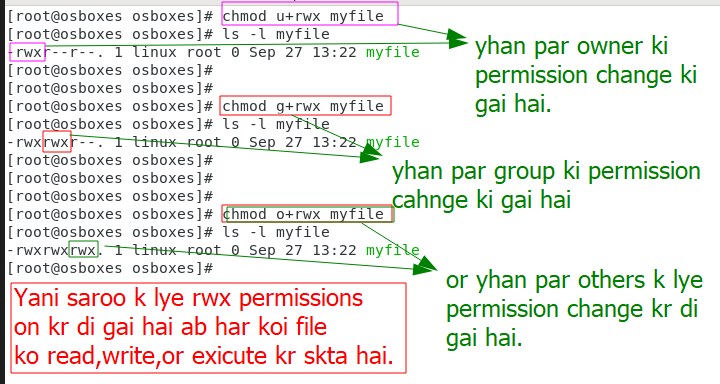
yhan par hum permissions off krein gy ..
agar kisi k lye permissin off krni hoo tu - use ho ga . Screenshot dekhain..
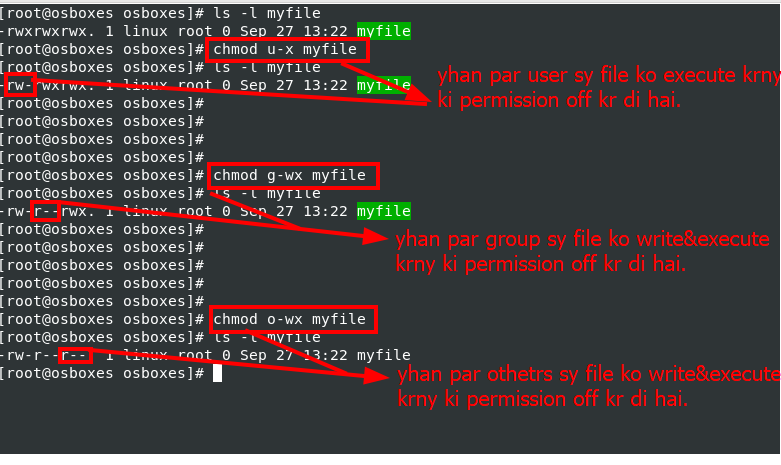
hum 1 saath sb ki permission bhi off kr skty hain jis ka prectical neechy screenshot main hai.
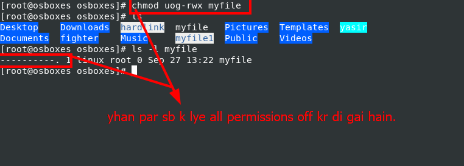
vim editors main
| Kaam | Command |
|---|---|
| Modes | Esc Normal mode, i Insert, v →Visual, : Command-line |
| Save | :w |
| Quit | :q |
| Save & Quit | :wq ya ZZ |
| Quit without saving | :q! |
| Undo | u |
| Redo | Ctrl+r |
| Copy line | yy |
| Copy word | yw |
| Cut (delete) line | dd |
| Cut (delete) word | dw |
| Paste | p (baad me), P (pehle) |
| Select (character) | v |
| Select (line) | V |
| Search text | /word |
| Next match | n |
| Previous match | N |
| Show line numbers | :set number |
| Hide line numbers | :set nonumber |
rwx pemissions kia hain?r yani read ki permission hai too aap file ko read kr sktee ho , file ko copy bhi kr sktee hoo,rw permissions o aap file ko modify yani file main likh bhi skty hain, file ko delete bhi kr sktee hain.x execute permission so aap us file ko run bhi kr sktee hoo. ye permission scripted file k lye hoti .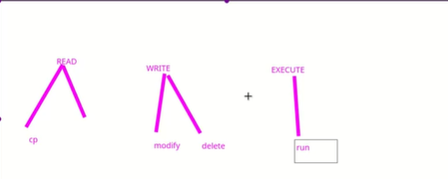yhan phir permission ki baat krian gy..
1 normal user kisi ko permissions ni de skta jesa k is screen shot main dehay gay hai 1 user kisi or ko execute ki pemission dee rha hai lekin permission denaied ka error a rha hai. is ka matlsb hai k aap as a normal user ksis ko koi permission ni skty ka wo file ko read wrote ya execute kr skee. 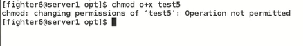
(change attribute) Linux command hai jo file ya directory ke special attributes set/change karne ke liye use hoti hai.
jb ye kisi file ko chattr kr dya jata hai to file na to modify ho skti hai or na hi delete . is file root user bhi delete ni kr sktaa.
file cahttr k lye command:cahttr +i myfile
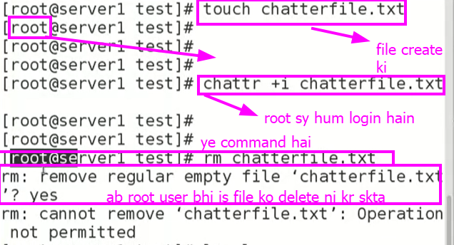
file cahttr khatam krny k lye command:cahttr -i myfile
ye digit k saath permission grant krny ka method hai.
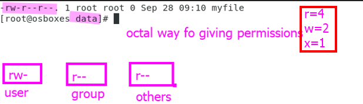
screenshoot k mutabiq data file ki pemissions ```rw-r--r--`` hai to ab is file ki permission octalway sy change krni hain .
ab sb k lye rwx ki permission on krni hain.
chmod 777 myfile
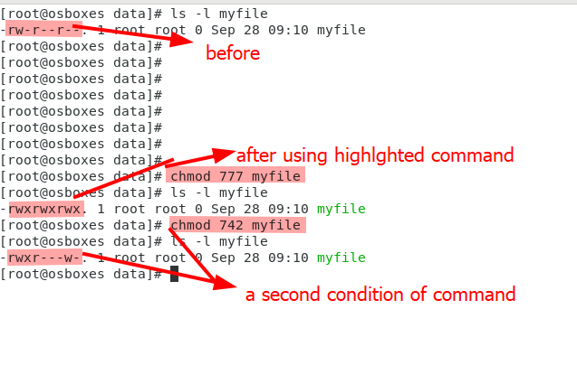
command:setfacl u:username:rwx filename
agar check krna ho k kis user ko access control list sy permission di gai he
command:getfacl file name
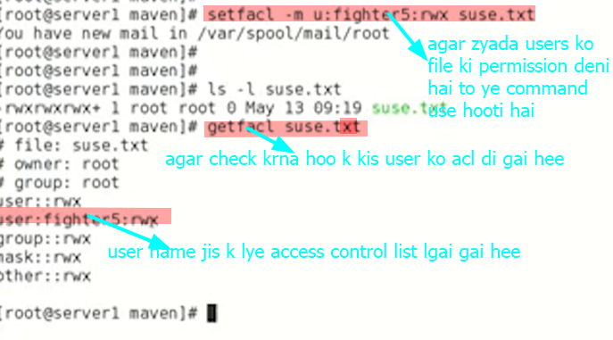
agar kis user ko acl access control list sy nikalna ho to ye coomand use hoti hai.
command:setfacl -x u:username:rwx filename
agar ksis file ki sari mermissions odd hain to phir bhi file ka owner or root user file ko overwrite or delete kr ksty hain.
agar kisi file ki averall permission off kr dain or us ki parent directory ki jo permissions on hoo gi wo users or group isteaml kr k wo kam kr skty hain jin kk lye directory ki permission on hoo gi is ko Inharit Permission kehty hain
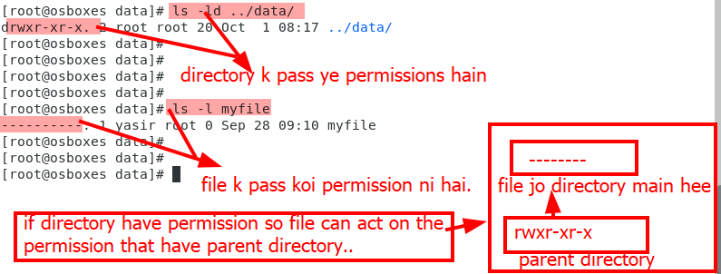
inherit permission
chattr command
ye command kisi inportant file ko secure krny k lye use hoti hain taa k koi bhi yani root user, owner user ya other user is file ko overwrite ya delet na kr skee.
ya command sirf important file (confidantial data) k lye use ki jaati hai .
system files ko chattr ni krna Q k logs update hona bhi off ho jaye gee agar system file ko bhi chattr kr dain too
see screeshot

chattr command ko htany k baad root user us file delet kr skta hai .
chattr -i myfile likh kr run kr dain aap ki file sy chattr hat jaye gi.linux main 7 runlevels hoty hain jo 0,1,2,3,4,5,6 hoty haun.
agar check krna ho k mjoda runlevel kia he to
runlevel command use hoti hai.
jb hum runlevel check krty hai to is trha show hota jo screenshoot main dekhya gya hai.
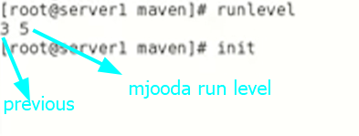
init command sy hum runlevel change krty hain.
about runlevels
if your passwor forget how you can go for 1 runlevel?
runlevel 1 main jaany k lye password ki zroorat ni hoti or agar aap password bool gaye hain to aap 1 runlevel main password change kr skty hain.
Harddisk ki daigram...
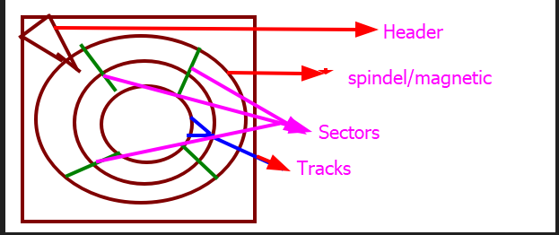
Hardwear ko os k anadr chlany k lye device dirvers use hooty hain.
Device drivers low level programs hoty hain jo haedwear or respective softwera k darmyaan intract krty hain.
Partition = Hard disk ke logical hisson mein taqseem.
Linux mein sab kuch / (root) ke neeche mount hota hai.
Partitions help karte hain system ko manage, secure aur efficient banane mein.
Command Line Tools:
fdisk hai.Linux Partition ka Structure
| Partition Name | Mount Point | Size Example | Explanation |
|---|---|---|---|
| /dev/sda1 | /boot | 512 MB | Boot files ke liye |
| /dev/sda2 | / | 20–30 GB | Main system (Linux OS) |
| /dev/sda3 | /home | 100 GB | Users ka data |
| /dev/sda4 | swap | 4 GB | Extra memory |
Windows main or linux main partaions alag alag tarz ki hoti hain.
| Windows | Linux |
|---|---|
| C:, D:, E: drives | Everything under / |
| Each drive is separate | All folders are mounted under / |
| Can't mount folders as drives | Can mount partitions anywhere in tree |
Mount karna ka matlab hai —
kisi storage device (USB, hard disk, partition) ko system ke file system se attach karna taa ke uska data use kiya ja sake.
Multi-user mode with networking, but without GUI (Graphical Interface).
Sirf command line hoti hai.
Network kaam karta hai.
GUI (graphics / desktop) band hota hai.
Server ya repair mode ke liye use hota hai.
Runlevel 3 mein GUI nahi hota, lekin tum 6 alag login screens (terminals) use kar sakte ho — har ek apna console session hota hai.
ALT + F1 sy aap pehla console use kr skty hain.
ALT+F2 sy doosry consool main move ho jaaty hain.
isy trha F6 tk aap 6 consloes main move kr skty haib jis console main jana hon ALT+F k saath us ka number likh dain yani 5 main jana hai tonF5 .
level3 main TTYs (teletype terminal) interface chal rha hota hai. yani har chez type krni hogi.
TTY ektext scree hoti hai jahan tum commands likh kar system control karte ho.
Ye driver nahi, balki interface (terminal) hoti hai jo console driver ke upar chalta hai.
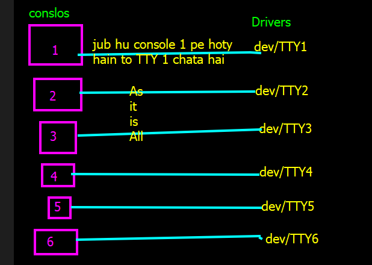
Runlevels sirf services aur interface change karte hain. storage ya file system par koi asar nahi padta. Matlab agau runLevel3 par kam krty hoaye main runlevel5 py switch kr doo to files remove nhi hoon gi. bs services change ho jati hain storage remove nhi hota.
Important concept
Runlevel3 main hoty hoye hum GUI use kr skty hain.
is k lye command startx use hoti hai.
agar GUI sy wapis niklna hai too is k lye pkillx command use hoti hi.
incase..
agar desktop py GUI server install ho ga to ye commands chalee gi agar minimla istall ho ga to ye kam ni kry gi q k us GUI pacakge install nhi.
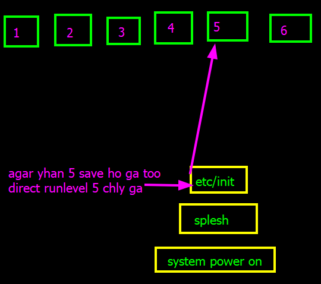
Hum nee pehly deekha or prha hai k:
jb hun singleuser mode (runlevel1) main jaaty hain to bydefault hum login id k begair or password k bagir login kr skty hain.
ab yha hum password set krain gee .
/etc/sysconfig/init
runlevel 1 main rehty hoaye aap /etc/sysconfig/init ye run krain too aap k pass 1 file open ho gi shift g dbaa k last py check karin agay |SINGLE=/sbin/sush| ayee ga yaha aap is line ko copy kr k neechy paste kr dain or sush ki jgha sulogin edit kr dain or jo line copy kia hai us k start py # lga k comment out kr dain ab aap k last line hi system read kry ga or is k mutabiq aap ny ab single user modd py bhi login page set kr dya hai .
ruslte
`:wq likh kr save kr dain or doobar runlevel5 sy runlevel1 (single user mode)main jayee to ab yha login page show ho ga r password maangy ga.
REHL 6 main runlevels hooty hain.
Jb k REHL 7&8 mian main targets hooty hain.
yhaan par hum 2 targets k mutalaq padheen gy
systemctl get-default
REHL 7&8 main target hooty hain us ka matlab ye nhi hee kn yhan runlevel show nhi hooty agay REHL 7&8 mian bhi runlevel ki command run krty hai too aap ko runelevel show hoo gy.as user friendly.
 jeesy hun REHL6 main runelevl sitch krny k lye
jeesy hun REHL6 main runelevl sitch krny k lye init lift use krt hain Same ust trha REHL 7 ya 8 main hum targts switch krny k lye systemctl isolate multiuser too app multi user target main switch kr jayeen gy
or agarsystemctl isolate graphical to aap grphical target main switch kr jayeen gy. See screenshot..
important
systemctl isolate multiuser is similar to runlevel3
systemctl isolate graphica is similar to runlevel 5
REHL7and8 main single user mode(yaani runlevel 1)ka concept alag hai.
REHL7and8 main single user mode(yaani runlevel 1) main jaany k lye hmy initramfs file break krni pdti hai. phir 1 shell milta hai. is k baary main hum aagy padheen gy ki is command kia hai initramfs kia hai.
Break ki command
BREAK initramfs hai.
fdiskOS main harddisk ki storage kam q show hoti hsi?
Ans:
Hard disk kam is liye show hoti hai kyunki company aur OS dono storage ko alag tarah se ginte hain.
Company kehta hai: 1 GB = 1000 MB
Lekin OS kehta hai: 1 GB = 1024 MB
Is liye jab OS ginta hai to size thoda kam nikalta hai.
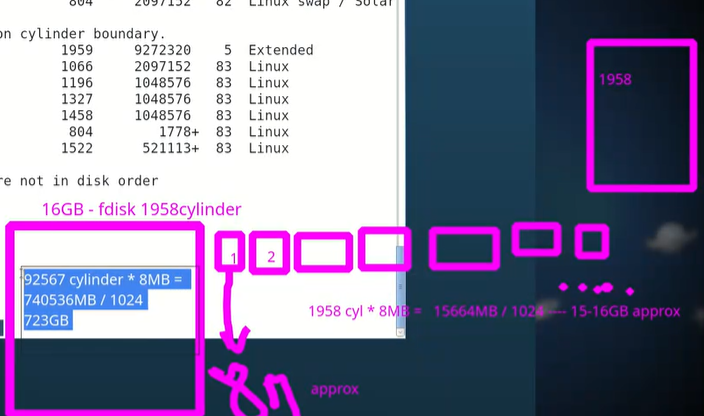
cylinder ki koi permanet value ni hooti. disk ke physical design par depend karta hai.
amooman GBs Harddisk main 1 cylinder 8mb ka hoota hai.
or agar 500 MBs ki hardisk hai too cylinder ki value 1 Mb hoo gi.
Screenshoot k mutabiq..
16GB harddisk main 1958 cylinders hooty hain agar 1 cylinder 8Mb k hoo too.
1958*8=1566MB Cylinders ko Mb main
1566/1024=16 or 15 Gbs approxly
agar 16Gb ki harddisk hai or main nee 24MB ki 1 partation bnani hai too 8Mbs k hisaab sy 3 cylinders user hoon gee.
Harddisk and partaion create krna.
Harddisk create krna
machine ko sutdownshutdown -f now krain.
Settings main storage open kr k SATA par add ko click kr k create krain.
storage select krain k kitni chaye or choose kr lain.
ab maechine start karin aap ki new harddisk create ho gai hai .
check krny k lyee ls -l /dev/sd* command run krain. latest name sy aap ki new harddisk show ho gi.
Harddisk main partaion create krna
fdisk /dev/HDD ka name likh kr command run krain.m for helpsy.n sy mew partationp sy partation ki deatils print krain etc.n likh kr run karin or aagy required details dain jitni storage ki aap ny paration bnanai hai, name number kia rkhna hai,kis cylinder sy start krna hai etc.p sy aap partation ki detials check kr skty hain.q quit kr k aap file sy bahir aa skty hain.fdisk sy sirf partation create kr skty hain or delete kr skty hain. 1 hardisk main sirf 4 partation bna skty hainagar 4 sy zayad bnana hai too aap 4th aprtation extended bnaye is sy error nhi aye gaa agar already 4 primary partation hain to phir extended bhi bnaye ga aap ko 4th paration extended bnana ho ga. extended partation k andar bhi aap partation bhi bna skty hain or cylinders hold bhi kr skty hain or baad main us cylinders par bhi aprtaion bna skty hain.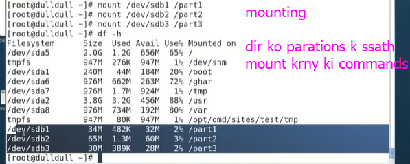jb hum partations bnaaty hain too fdisk un ki entry or deatils partation table main main likh deta hai k paration kitna storage rkhti hai,kitny cilynders par mustmil hai, kis cylinder sy start ho rhi hai or kis cylinder pee end ho rhi hai etc.Partation Table
Partition Table ek aisa structure hai jo hard disk ke start mein hota hai. Yeh table operating system ko batata hai ke aap ki disk par partitions kaise arrange hain.
Yeh basically ek "map" ya "index" ki tarah hai.
Yeh Kyon Zaroori Hai?
Disk par har partition ki jagah (location) track karne ke liye.
Yeh define karne ke liye ke konsa partition "bootable" hai.
Operating system ko yeh batane ke liye ke usay data kahan read/write karna hai.
Jb hum partation create kr k w save kr qiut q krt hain to partation table main save ho jT hai k partation create ho gai hai.
Isy trha ye process Krenal table pai bhi chalta hai k Harddisk main 1 or partation create ki gai jis sy OS partation access krny ki info hasil krta hai.
Is k lye command hai partx -a
REHL 6 main partx -a
REHL 7 main partprobe
ye command partation table sy deatils lee kr kernal table ko update krti hai or RAM main save ho jata hai .
System ko reboot kye bgair kernal table ko update krny k lye use hoti hai
agar OS ko reboot kr dya jaye to kernal table khud hi update hoo k partations ki detail load kr leta hai.
agar partation table main details update hoo gi to kernal table main update hoo
Make sure k partatiom table main w likh kr partation ki deatls update kr dain.
Formating
Formatting ek aisa process hai jis mein aap kisi partition ya drive ko prepare karte hain data store karne ke liye.
For example: Aap ek nayi khali copy lete hain. Uss copy par lines (guides) khenchte hain taake aap baad mein acchi tarah likh saken.
File System create krna bhi formating hai.
Command: mkfs.ext4 /dev/sdb1
Partitioning drive ko hisson mein taqseem karta hai jaise ghar ke kamre banana.
Formatting har hissey ko usable banata hai jaise har kamrey mein almariyan aur table lagna.
FileSystems
Linux version k issab sy filesystem bnaye gyee hain.
ext2ext3jeesa k neechy pic main hai.
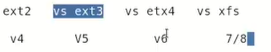
Par ye baat zroori nhi k jis REHL Version k lye file system ka version bnaya gya hai wo sirf wo hi use kr sktaa hai. har version har filesystem ka version use kr skta hai . Bs us k packages install krny hoo gy.
MountingDefination
Kisi bhi storage device ke partition ko system ki directory tree ke kisi khaas folder k saath attach krna, taa k partition ki files aur folders tak user ki rsaai ho sake.
Mounting make sure krti he ke kis physical device ka data kis folder ke andar dikhna chahiye.
Formatting Drive ko use karne ke qaabil banana (isme file system banta hai).
Mounting Us tayyar drive ko system se jorna, taake aap usme files daal aur nikal saken.
| Point | Mounting | Mapping |
|---|---|---|
| Kya Jodte Hain? | Physical Device (HDD, USB) | Virtual/Network Resource |
| Kahan Jodte Hain? | Directory/Folder (e.g., /mnt/) |
Drive Letter (e.g., Z:) ya Virtual Path |
| Platform | Linux/UNIX mein zyada common | Windows mein zyada common |
agar hum nee kisi directory ko partation k saath mount kia hai too data partation main save hoota hai isy wjha sy directory ko unmount kr dain too data lose ni hoota.
agar doobara mount krain gee too data doobara directory main show hoony lgy ga.
agar pehli directory koo unmount kr dain or kisi or directory ko mount kr dain too same data nai directory main show hoony lgy ga.
fstabye mount ki gai directory system k reboot hony tk hi mount rhy gi. yaani yee temporary process hai. isko permanent krny k lyee fstab ka concept use hota hai.
fstab (file system table) ik boot process file hai yaani jb system boot hota hai to ye file refer hota hai.
is ki 6 fields hoti hain.

compression Kisi cheez ko shrink krna, deflate krna,us main sy azafi hava nikaal deena hai.
Linux main ompression ek aisa process hai jisme files ya folders ko chota size mein convert kiya jata hai taki Kam storage use ho, Transfer fast ho, Bandwidth bache.
*saary characters ko bulany k lye.yani rm*.jpg see sari photos delete ho jaye gi.
? kisi 1 character ko mukhatib kry ga .
file1.txt = file?.txt
ik character wali sab files dikhao..
ls file?.txt
file1.txt, fileA.txt, fileX.txt
Do character wali files is trha deekh skty hain.
ls pic??.jpg
pic01.jpg, picAB.jpg, pic12.jpg
File ko zip krny k lye commandgzip filename
bzip filenme
jab hum ksis file ko zip krty hain to file ki extantion khud ba khud change hoo k .gz ya .bz hoo jata hai.
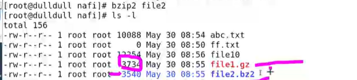
file ko unzip krny k lye commandgunzip filename
bunzip filename
zip kia hai?
ye command multiple files ko compress krta hai or sb files ko 1 file main archive krta hai.
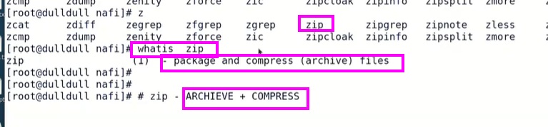
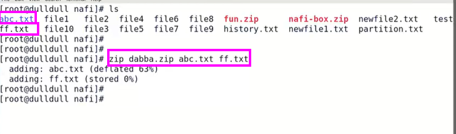
File ko compress krny ki suitability file ki halat par depend krti hai k file kis noyat ki hai. .txt hai,.png hai ya .dochai.
Isy hiassab sy file compress hoti hai simple file yani .txt .doc file see zyada compress hoti hai or .doc file .png file se zyada compress hoti hai.
zip ka maqsad files ko archive krna yaani multiple files ko gether krna akhatta krna or 1 single file bna dena hai.
agar compressive file ko hum cat sy read krain gee to file data croptted show hoo ga yaani unreadabel.
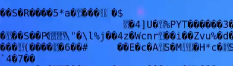
Hum is file k data koo zcat filename command run readable form main hasil kr skty hain agar file ko uncompress kiye bgair read krna hai.
agar file bzip sy compress kia hai wo file bzcat file name sy read hoo gi.
see SS. 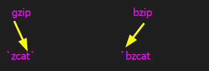
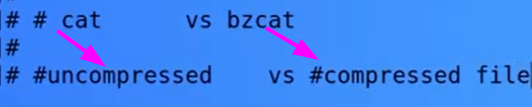
* ka usecaseagar hum * ko usde krain to is ka matlab hai all select yaani jis directoy main hain us main mjood saari file ko select kroo.
agar same diretory mai hain too simple * use hoo ga agar kisi file main rehty hoye kisi or file k data ko select krna hee to file ka proper path de kr last py* use krai keesy k .. etc/mint/*
jb hum file ko zip krty hain too jis file main hum sb file ko archive krty hain us file ki extamation koi bhi likh dain to file to bhi koi masla ni hoo ga of files archive hoo jaye gi.
lekin ls -l sy file ki list niakleen gy to file red highlighted ni hii go .
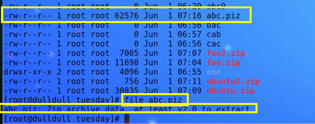
Yeh aisi file hai jis mein bohat si files jamaa kar ke band kar di gayi jaati, jaise aap saamaan ek box mein pack karte hain.
.tar.gz
.tgz
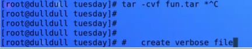
tar sirf files ko akhata krta hai compress ni krta compress krny k lye tar k saath compressive tools gzip ya bzip use krny hooty hain.
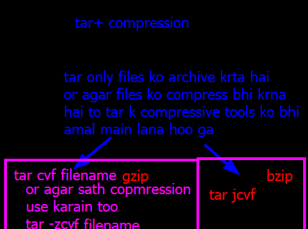
agar in files ko axtarct krna hai to ya command use hoon gi agar tar k saath .gzip use hoi hai to is file ko tar -zxvf filname use hoo ga.
agar file tar bzip k saath compress or archive hoi hai too tar -jxvf filename extract hoo gi.
agar file ki halat maloom krni hai k compress hai ya archive+compress hai to is k lye file filename command use hoti hai.
cp , rsync, cpio linux k backup tools hain
yaani in tools sy hum data ka backup lee skty hain.
cp sy kisi file ka backup leena hoo ye commnd hai.
cp /data/* /yasir
yaani data dir k andar jo bhi files ya data hai usy yasirmain bhi copy krdo.
cptool main directory k andar agar directory hoo too ya error deta hai yaani data copy ni krta.
rsync ik powerful backup tool hai .agar koi puchy k bakup k lye konsa tools use hota hai to sb pehly rsync.
ye remote sync bhi kr sktaa hai yaani other machine par bhi backup ly skta hai.
ye 1 encreamentall tool hai.
command
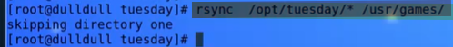
rsync is lyee powerful tools hai q k is sy 1 machine sy doosri machine main data k backup ly skty hain.
agar same machine main backup lain to machine crash hoony ki sorat main bacup bhi katam hoo skta hai is lye is tool ka usecase bohat powerful hai.
rsync k saath compression tools 9.bzip and .gzip0 ko bhi use kia jaa skta hai.
agar machine to machine backup lena hai too aap lee skty hain or agar compant aap SAN.NAS ya tape drive provide kr rhi hai to aap us main backup lt skty ahin.
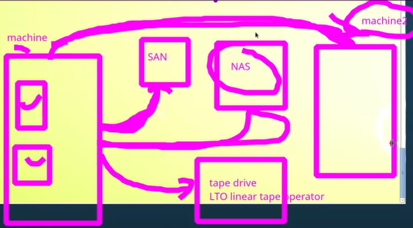
rsync -avz /home/yasir/docs username/backup/
Ye ek combination flag ha ye bohat si options ko enable krt hai.jaise ek folder ka excat clone bnana hoo-a wahi karta hai.
Iska kaam hai file ka pura structure aur properties preserve karna.
r recursively copy karna (subfolders ke sath)
l symbolic links preserve karna
p permissions preserve karna
t timestamps preserve karna
g group info preserve karna
o owner preserve karna
ye sirf output dekhata hai k jo file copy ki hai ya jis ka backup liya hai us ka size kitna tha,data kitna transfere hoa hai.etc
Agar aap network par file bhej rahe ho (remote system) k zryee data transfere krny sy pehle ye data ko compress kr deta hai or Destination par jaake woh data decompress hota hai taaa k bandwidth bachy aur transfer fast hoo khaas tor par slow networks par.
- SSH transfer ke dauran ye automatic hota hai.
`Ye ensure karta hai ke destination directory bilkul source ke barabar ho.yaani joo file source dir main mjood nhi hee wo destination see delte ho jaye gi.
mirror image banana yaani source se extra cheezein destination se hata di jayen.
progress har file ka progress is sy daiks skty hain.
transfer beech main ruk jaaye (network down, etc.), to hun is process ko resume kr skty hain.
SSHSSH (Secure Shell) ek network protocol hai jo aapko remote computer ya server se secure connection ke zariye connect hone ki ijazat deta hai.
SSH ka kaam.
Remote system se securely login karna
REmote server par command run krna.
Files transfer karna (yani rsync)
securely Port forwarding / tunneling karna
SSHWorking
jb kisi remote system sy connect hoty hainssh username ya ip to apka system aur remote system ek encrypted connection establish karte hain.
password Ya SSH key pair (public/private keys) se Authentication hoti hai.
agar connect ho jaye too aap remote terminal par directly commands run kar sakte ho jaise aap local system par karte ho.
SSH data ko encrypt karta hai taakePasswords aur commands safe rahen Koi bhi s attacker data ko read na kar sake.
SSH port 22 par run hota hai.
Port ek numarical gate hota hai jisse computer ke andar koi network service communicate karti hai.
Har computer ya server ke paas ek IP address hota haijaise ghar ka address. Lekin us ghar ke andar bohot saare kamray yaani services hoti hain jeesy web server, SSH, email server, etc. Ye kamray alag ports ke zariye identify hote hain.
SSH or har network service ka port number change kiya ja sakta haiQ.kia hum ports ko change kr skty hain?g han hum ports ko change kr skty hain.| Service | byDefault Port | Example of Custom Port |
|---|---|---|
| SSH | 22 | 44, 2222 |
| HTTP (Web) | 80 | 8080 |
| HTTPS (Secure Web) | 443 | 8443 |
stat commmand:-stat command ka kaam hota hai file ya directory ke detailed information dikhanajaise size, permissions, owner, timestamps, inode number, or links vgera.
stat filenamersync source k modify time or destination k modify time ko compare rkhta hai yaani same rkhta hai. agar source k modify time change ho ga to destination ka m-time bhi change ho jaye ga.bashart k aap rsync kr k doobara update krain too.
What is LUN?
LUN ka matlab hota hai Logical Unit Number. Yeh storage system jaise SAN (Storage Area Network) ka logical partition hota hai.
What is LUN scanning?
LUN Scanning ka maqsad hai k server apne storage system (SAN/NAS) se updated LUN ko detect kare.
Jab storage admin kisi server ke liye naya LUN assign karta hai,to server ko wo LUN automatically nahi dikhta. Server ko scan karna padta hai taake wo naya LUN detect aur use kar sake.
jb hum LUN scanning k lye commandecho "- - -" > /sys/class/scsi_host/host0/scan run krty hain too system main mjood HBA card SAN main mjodd HBA card sy wired connection bnata hai or OS ko inform krt hai k naya LUN assign ho gaya hai to tumhe lsblkya fdisk -l me nayi disk dikhti hai.
What is HBA card?
HBA ka matlab hota hai Host Bus Adapter.
Yeh ek hardware card hota hai jo server ko SAN storage se connect karta hai.Jab hum LUN Scanning naye LUN detect karty hain to wo scan HBA card ke through hota hai. 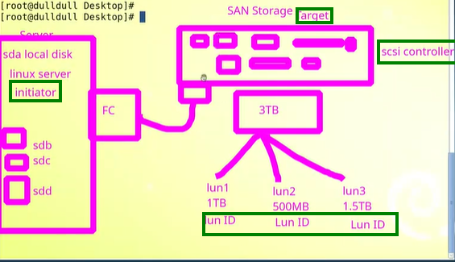
linux server mian jo LUN ko control krta hai usy initiator kehty hain. ye HBA card k through ficer conection sy SAN ko command krta hai .
SAN ko hum target kehty hain . or SAN k anadar jo dsiks ko control krta hai us ko SCSI controller kehty hain. ye disks ko control or manage krt hai.
SAN ki disks sy jo LUNs bnaye jaaty hain un ko LUN id sy represent kia jata hai.
initiator k fiber connection k zryee target ko command dena, or SCSI controller ka disks ko manage kr k LUNs banana or LUNs id zryee serevr ko LUNs detect krny ka process hi LUN Scanning hai.
imoprtant Point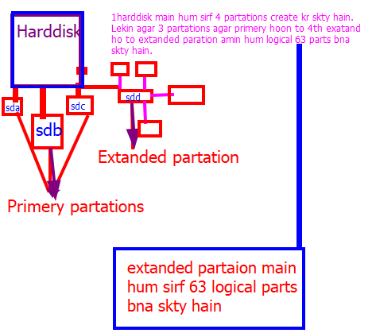
extended partation koi storage ni rkhta magar is main hum jo logical partations create krty hain wo sotrage own krty hain.
yaani hum pehly 3 primary partations create krty hain sda ,sda1 ,sda2, or 4rh extended partation hoyi hai sda5or us main lodical partations create krain sda6,sda7 sda8 ab yhaan par 9 partation create hochuki hain lakin sirf 8 partations storage own krti hain .sda5 yaani extend partation koi storage ni gheerti ye sirf area provide krti hai.
Q:-agar hum first partation primary bnaye to second wali extend bna skty hai?
g han bna skty hain .
Q:- kia extend partation k baad primary paration bna skty hain?
g hum extend partation k baad 2 oor primary partations bna skty hain.
Q:_ kia extend partation ka driver hota hai?
Nahi, extended partition ka koi driver nahi hota.
Q:_ extend partation kia hai?
Ek hard disk sirf 4 primary partitions bana sakti hai.Lekin agar hume 4 se zyada chahiyein, to hum ek extended partition banate hain yeh khud data store nahi karti, bas container hoti hai.Uske andar hum logical partitions banate hain jahan actual data hota hai.
Q:_Primary partation kai hai?
Pimary partation Real usable partition hoti hai jo data store rk skti hai or bootable bhi bnai ja skti hai.
Zyada se zyada 4 primary partitions ek disk par ho sakti hain.
Q:_ logical partation kia hoti hai?
Veesy to sb partation logical hi hoti hai lakin yhan logical partation sy muraaad wo partation hai jo extended partation k andar create hoti hai or data srore kr skti hai.
Hum 1 extended partation main 63 logical partation create kr skty hain.
Q:- Kia har logical partation ka apna driver hota hai?
Har logical partition ka apna driver nahi hota.Sab logical partitions ek hi disk driver share karte hain.
Q:_Kia har primary partation ka pna driver hota hai?
har OS ek hard disk k lye single driver assign krt hai . yaani /dev/sdaUs disk ke andar jitni bhi primary partitions hain (/dev/sda1, /dev/sda2, /dev/sda3,),sab usi driver ke zariye access hoti hain.
Q:_partations ko (/dev/sda1, /dev/sda2, /dev/sda3,) ye is trha name q dye jaaty hain jb k dirver to same hi use krty hain?
driver same hota hai, Lekin OS ko har partition tak access karne ke liye alag path chahiye hota hai.Is liye Linux har partition ko unique name deta hai — /dev/sda1, /dev/sda2, etc.
Ye mounting process k lye bhi zroori hoa hai.Q:_What is Partation Tbale?
*Partition Table ek map hai jo disk ke andar har partition ka location aur size batata hai.
Partation Table k kaam..Ye harddisk main partations ki iformation store krt hai.
Ye jb system boot hota to Operating System ko Guide Karta hai k harddisk main kitni partation hain or khan hain taa k OS in ko access kr skee.
ye New Partitions Create/Delete Karne Mein Madad krta hai
.Types Partatoin table ki 2 types hoti hain:
msdos/MBR (Master Boot Record)
GPT (GUID partaion table )
GPT Ye table type new OS main aati hai . or is k zryee hum 1 Hardisk main 128 primary partaion bna skty hain lakin harddisk ki storage 2TB se zyada hoo.jb partations create ho jaye w run kr k partation table ko update kr dya jata hai.
is k baad hum partx command run kr k partation ko kernal k knowledge main laaty hai taa k system boot hony par OS partaion ko access kr skee.
kernal k saath attach krny k baad partations main mkfs command k zryee filesystem bnaya jata hai.is amal ko formatig kehty hain.
filesystem jb ban jata hai to file ko kisi directory k saath attach kr dya jata hai taa k partation main mjood data read,write hoo skee is amal ko mounting kehty hain.
Jab hum system start krty hain to OS storage yani harddisk sy RAM main load hoo jata hai.
Q:_kia reason hau OS k data RAM main load ho jata hai?
OS ka data RAM main is liye load hota hai taake system fast chale
DetailS
Speed:
Hard disk slow storage hoti hai.or RAM bahut fast hoti hai.Is liye OS apna important data (jaise kernel, drivers, aur frequently used files) RAM main load karta hai taake CPU unhe jaldi access kar sake.
Execution ke liye zaroori hota Jab koi program ya OS function run hota hai, CPU sirf RAM se data read kar sakta hai — direct HDD se nahi. Is liye OS apna data pehle RAM main load karta hai, phir CPU usay execute karta hai.
RAM main data hone se OS ek saath multiple tasks handle kar sakta hai.
Harddisk aik mechanical device hai jb k RAM electronic chip hoti hai.
CPU sirf RAM se direct data read/write kar sakta hai.
RAM kia hia?RAM (Random Access Memory) ek temporary memory hoti hai jo computer ke running data aur programs ko fast access ke liye store karti hai.
Lekin kuch tasks or commands esi bhi hoti hain jin ko sirf RAM execute ni kr skti un k lye HDD kaam krti hai.
rm -rf /* command ko HDD hi execute krti hain q k ye pura OS delete krny ki command hai or is main HDD hi amal pera hoti hai q k overall data ro HDD main hi hota hai or aap us ko delet krny ja rhee hain.isy trha koi file or directory bnana bhi is case ko follow kry ga.
.ext2,.ext3.ext4,.xfs in sb main kia diference hai?| Feature | EXT2 | EXT3 | EXT4 | XFS |
|---|---|---|---|---|
| Journaling | non | hota hai | hota hai | Advanced |
| Max File Size | 2 TB | 2 TB | Up to 16 TB | Up to 8 Exabytes |
| Max Partition Size | 32 TB | 32 TB | 1 Exabyte | 8 EB |
| Performance | Slow (no journaling) | Medium | Fast average | Very Fast |
| Snapshot | no | No | can not take snapshot | Can take snapshots |
EXT3 ek directory ke andar maximum 32,000 subdirectories (folders) tak handle kar sakta hai.
EXT4 ek directory ke andar 64,000 subdirectories tak support karta hai — yani double capacity.
Journaling kia hota hai?Journaling file system me esa feature haijo system crash ya power failure ke baad data loss se bachati hai.
` jb hum partation ko kisi directory sy mount krty hain to actually us partation ka file system RAM main load ho jata hai or jb df -f command run krty hain too hum ko output RAM sy hi ata hai or dikh rha hota hai ki partatiom ksi directory k saath mount hoi hai.

ye process temporary hai agar is ko persist/permanent krna hai to is ki entry /cte/fstab k andar krni hoo gi.
vi /etc/fstab
jb hum partation ki entry /etc/fatab main kr dety hain to mount -a ki madad sy hum ummount partation ko mount bhi kr skty hain jin ki enrty fstab main hoi hoo.
ye process lazim hai agar aap ne ko bhi enrty galat ki to machine crash hoo skti hai or reboot ni ho gai is lye har bar mount -a command run krain jb bhi kisi partation ki entry /etc/fstab min krain.
FSCKfsck ek Linux tool hai jo file system errors detect aur repair karta hai,taake data corruption na ho aur system stable rahe.
gar check krna ho k hmari partation main koi badblocks hain yaani (errors, missing inodes, broken links,) hain to badblocks -v /dev/sdd1 run krian gee.
Data main kbhi kisi qisam ka corruption ni hota balky filesystem main errors, missing inodes, aaty hain jis ki wjha sy data access no hoo pata.
Pehly badblocks check kiyee jaaty hain. Pic main 0 badblocks dikhaa rhaa hai.
Neechy filesystem repair krny ki command run ki gai hai. ye command fsck ya e2fsck hoti hai. e2fsck updated tool hai.
error a rha hai k partation mounted hai yaani agar mounted partation ko repair kia jaaye to ye error deta hai or precess ni hota.
pehly partation ko unmount kia jata hai.
phir fsck tool ko istemal krty hoyee partation ko clean kia jata hai.
Now pic main deekha ja skta hai k file clean ho gai hai.
aik or command use hoti hai ji filesystem main mjood errors ko detect krti hai or k ensure karta hai ke har detected problem bina rukhe repair ho jaye.
e2fsck -yc /dev/sdb1is command do flags use hoty hain.
-y,-c
-c ke through bad sectors detect karta hai.
-y ensure karta hai ke har detected problem bina rukhe repair ho jaye.
Filesystem check and repair krny k lye k lye zrooroi hai k aap ki partation kisi directory sy mount na ho.
agar mount hai to sb sy pehly unmount krian or phir fsck ya e2fsck sy filesystem repair krain.
agar yhan par hum ko / ka filesystem repair krna hoo to / root ko directly unmount nhi krin gy Q k all process running in /root.
/root ko hum rescue mode main jaa kr unmount kr skty hain taa k process na rukny payen.
fsck ya e2fsck k zryee filesystem repair krny k dooran data lose n hota jb k filesystem ki indexing change hoo jaati hai.
Manual
e2fsck & fsck manual reapiring tools hian. is process k duraan aap ko bohat jagha par confirmation deni hoti jo k yes no ki sorat main aap sy puchta hai.
Auto Repairing
e2fsck -y & fsck -y
agar dono commands main hum -y ka use krain to aap ki required confirmations auto yaani khud ba khud hi dee ga . aap ko baar baar yes or no krny ki zrorat ni peesh aye gi.
Auto reparing with report
e2fsck -yc
agar aap -yc dono flags ka use krty hain to ye aap ko filesystem ki saari report bhi fraham krta hai.k kia kia cheez urepair ho chuki hai.
Hum FSCK Q krty hain?Harddisk ki partation main errors,badblocks aany par harddisk proper work ni kti jis wajah sy hum fsck y e2fsck k zryee is ko clean krty hain.
ye badblocks kis wajah sy aty hain?System ko unclean shutdown krny ki wajha sy yaani machine py kam kry proper band kye bgair systemko shutdown kr dene .
agar aap chahty hain k system boot hony k duran hi aap ki partation ko check kia jaye k clean hai nhi or agar koi error ya badblocks hain un ko remove kr k filesystem repair kr dy too is k aap ko /etc/fstab main entry krni hoti hai.
ye enrty fstab ki 6th filed py hoti hai agar whan app 0 likh doo is ka matlab hai k aap nhi chahty k booting k duraan aap ki harddisk ko check and repair kia jaye .
agar waha aap 1 likh dain aap ijazat de rhy hain k sirf / root partation ka booting k duran filesystems check and repair kye jaye.
agar waha aap 2 likh dain aap ijazat de rhy hain k booting k duran all aprtations ka filesystems check and repair kye jaye.
fstab ki fields .yaani hun /etc directory main hai or ls command sy hum ye check krty hain k is mai ktny files & folders hain.
to agar hmy count krna ho k kitny files and folders hain to ye command use hoti hai.
wc -l
agar hum is command ko simply run kry gy to koi output ni de gi .
agar hum ls | wc -l command run krain ge to ye ls k output | k zryee wc -l main bheej dee ga or wc -l is ka out put numbers main de gi k kitny files and folders hain/etc directory main.
agar hum ls /etc/* run krain gy to is ka ouput kafi long term ho ga agar is ko hum sigle line scroling main hasil krna hai to \ k saath less command use kr k single line scroling shape main hasil kr skty hain.
ls /etc/* | less
gar hum ls /home/* run krain gy to is ka ouput kafi long term ho ga agar is ko hum page wise hasil krna hai to \ k saath more command use kr k page wise hasil kr skty hain.
ls /home/* | more
Filesystem ki 4th filed mian 7 kisam sy option hi hain
auto, rw, dev, async, suid, exec, nouser
| Option | Description |
|---|---|
| auto | Partition automatically boot time par mount hoti hai. |
| rw | Read aur Write dono permission deta hai. |
| dev | Device files ko use karne ki permission rkhta hai. |
| async | Data asynchronously likha jata hai jis sy performance better hoti hai. |
| suid | SUID/SGID bits enable rehti hain. |
| exec | Executable files run karne ki permission deta hai. |
| **nouser** | Sirf root user mount/unmount kar sakta hai. |
Agar 4th filed main nouser ki permission likh di jate to koi bhi user partation mount ni kr skta siway root user k.
Agar 4th filed main default ilkha rhee to aap us k aagy jo bhi permission add krain gy system default option ko skip kr k ap ki ad ki gai permission ko priority dee ga or use kry ga.
Process & Deamonsjab koi program ya command execute .ho rahi hoti hai to wo process ban jaati hai
Process hamesha RAM mein run hota hai.
open fileJab koi program ya process kisi file ko use kar raha hota hai or file RAM mian load hoti hai to wo file open file kehlati hai.
check krna ho k hmaari konsi file open file hai
lsof command use hoti ai.
agar in ko count krna ho to hum ne phli bhi 1 comman ka ouput count kia hai . yaani wc -l command use krain lekin |pipe k zryee if command lsof ka output wc -l main lee gy.
lsof | wc -lgrep commandFull form.
grep = Global Regular Expression Print
Defination
grep is a Linux command-line tool jo text ya files me search karne ke liye use hoti hai.
grep root /etc/passwd
Ye command /etc/passwd file ke andar root word search karegiaur wo lines show karegi jahan ye word milta hai.
-iagar command k saath ye -i use krain to command ki case senisitivity khatam ho jaye gi yani jo word search kia ho ga wo big or small lettes dono main hi mil jaye ga.
grep -i "host" /etc/passwd
| Option | Explanation | Example |
|---|---|---|
-i |
Case-insensitive search | grep -i "root" /etc/passwd |
-n |
Line number show kare | grep -n "bash" /etc/passwd |
ls /etc/* | grep -i host | wc -l
Ye command /etc folder ke andar un sab files/folders ko count karegi jinke naam me “host” word aata hai (case-insensitive).
find commandfind ek powerful searching command hai jo files aur directories ko specific conditions ke basis par search karta hai (jaise name, size, date, permission, owner, etc).
is command sy search ki gai files and folders ko delete bhi kr skty hain ,permission bhi change ke skty hainetc.
find /home/ -iname yasir.txtYe command /home directory ke andaraisi file ko search karegi jiska naam yasir.txt ho chahe wo uppercase ya lowercase letters me likhi hoi.
pehchy hum ne prha hai `losf command kia krti hai.
proces kia hota hai.
open file kia hai .
ab hum process and daemons k baary main more prhen gy...
Each process have own pid yaani har har process anpi aik `pid (Process id) rkhta hai jis k zryee system process ko pehchcnta hai.
erendomassin and manage pids or 80% process
pids change hoty rhty hain agar service ki restar krain ya machine ko restart krain to pid change ho jata hai.
agar dwkhna ho k kitne process hmari machine pe chal rhe hain to command hai.
ps -el
agar pages ki trha output chahye to.
ps -el |lessps -el |moreagar count krna ho k kitne proceess chal rhe hain to.
ps -l | wc -l
mari machine py os time 207 process chal rhee hthee.
Process ko kill krny yaani stop krny k lye command kill pid
agar pid maloom nhi hai to grep command or process k name sy aap pid maloom kr skyty hain jeesy k neech pic main dekhaya gya hai.
direct name k saath process kill krny ki command
pkill process name
cpu k details check krny ki command
lscpuusb ki details check krny ki command
lsusbinit REHL6 tk is a father of all processes or is ki pid kbhi change ni hoti hai.REHL 7 main system d hota haipstree process ka hirarchey hota hai.How to check load in system?
Linux Performance Monitoring Commands
| Command | Description |
|---|---|
top |
System processes aur CPU usage live show karta hai. |
htop |
top ka advanced version, colorful aur interactive. |
sar |
System activity report deta hai. |
iostat |
HDD load aur I/O performance check karta hai. |
vmstat |
Memory, swap, process aur CPU statistics deta hai. |
iperf |
Network bandwidth aur speed test karta hai. |
tcpdump |
Network packets capture aur analyze karne ke liye. |
lakin yhan hum top k baary main hi parheen gy.ye tmaam process jo RAM main load hoty hain un ko dikhata hai with used parts and programes ki performance k.
what is load?
agar RAM k process deekhny hon /proc directory main ja k deekh skty hain.it conatains navigated files that contain from RAM.
agar top command k alwa kisi or command sy storage yani memory check krni ho to ya command bhi use kr skty hain,
free -m
Hum ne pely bhi prhaa ha k kisi process ko kesy stop krna hai or khatam krna hai.
ab yhan pr hum pkill and kill k darmyaan faraq krain gy.
pkill commandagar is command sy kisi process ko khatam krna hai to hmy pkill k saath precess ka name likhna hoa ga .
command :pkill chrome
kill
kill command main hum process k name ki bjaye us process ki id yani pid deety hain.command: kill 224
kill command agar kam ni rkti to hum is ko firce fully kill krty hai yani flags use krty hain.
kill -9 224
forcefully kill krny k lye hum kill k saath -9 use kry hain.
by default kill -15 ko use krta hai lekin -9 focefully kill krt hai.
Kill -l sy hum kill command k signal maloom kr skty hain.
highlighted 3 signal hum aam taor par use krty hain.
Ampersand (&) ?Ye kisi Command ko background mein run karne ke liye istemal hota hai.
Jab aap kisi command ke end mein & lagate ho, to wo process background job ban jata hai.
System usko ek job ID aur process ID (PID) deta hai.
lekin system band hony kis surat main process bhi band ho jaye gagnome terminal ny process ko bsah shell main load kia
shell yani bash ny process ko chlaya.
jobs and fg ye commands background process ko dekhny k lye hoti hai.
Aur agar chaho to is command k zryee usko foreground mein wapas la skty hain .
fg %1yahan %1 job number hai
nohup command?Full form No Hang Up
ye command process ko out of shell chlany k lye use hoti hai.
yani agar aap terminal band kar do ya logout bhi kar do to bhi wo command ya process band ni hota or background mein chltaa rehta hai.
nohup "command" &
nohup k saath & lgana zaroori hota hai?| Case | Command | Kya Hota Hai |
|---|---|---|
With & |
nohup command & |
Command background mein chali jaati hai aur logout ke baad bhi chalti rehti hai. |
Without & |
nohup command |
Command foreground mein chalegi (terminal busy rahega), lekin logout ya terminal close hone ke baad bhi band nahi hogi. |
Is main 1 program apne aap ko baar-baar copy krta hai isliye bahut jaldi bahut saare processes ban jaate hain or System ki memory khatam ho jaati hai aur computer hang ho jaata hai.
Command
:(){ :|:& };:
Ye command ek fork bomb banata hai matlab ye system main infinite processes bana deta hai CPU aur memory dono full ho jate hain system hang / crash ho jata hai.
Daemon ek aisa background process hota hai jo system boot hone ke baad automatically start hota hai aur continuously specific task perform karta rehta hai.
| Feature | Process | Daemon |
|---|---|---|
| Definition | Program jo run ho raha hai (foreground ya background dono ho sakta hai) | Special process jo background mein continuously chal kar service provide karta hai |
| Start Hone ka Time | User ke command dene par (manual) | System boot hone par (automatically) |
| User Interaction | User directly control karta hai | User se directly interact nahi karta |
| Terminal Control | Usually terminal se linked hota hai | Terminal se unlink hota hai (no controlling terminal) |
| Lifetime | Jab tak user program run kare | System shutdown tak active rehta hai |
| Purpose | Temporary kaam karna (e.g. file edit, copy) | Continuous service dena (e.g. SSH, web, logs) |

1: System ko static IP address do. Ya phir 2: System ko DHCP ke zariye automatic IP lainay do.
--- Agar phir bhi kaam na karay to ---
3: vi ya koi aur text editor use karke yeh file open karo: /etc/sysconfig/network-scripts/ifcfg-eth0 Us file mein yeh line check karo ke ONBOOT=yes hai ya nahi. Agar no hai to use yes kar do. Iska matlab hai system start hotay he network interface on ho jaye ga.
4: Network service ko restart karo yeh command de kar: service network restart
5: Test karo ke ab routing theek hai ya nahi. Yeh command ip r l
6: Agar upar walay sab steps karne ke baad bhi masla hal na ho, to apni Virtual Machine (VM) ke settings mein ja kar "Network" section check karo. Wahan par "NAT" setting ko change kar ke "Bridge" kar do. Yeh VM ko apne host computer ke network directly attach kar day ga.